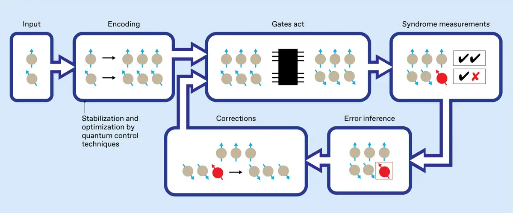

A selection of engineering work across Quantum Computing, Photonics, and performance-oriented systems. Some research is shown at a high level due to confidentiality.

Continuous Quantum Error Correction with ML Decoders
4-phase pipeline: static syndromes → Hamiltonian dynamics → non-ideal effects (colored noise, transients, drift) → adaptive online decoding. GRU achieves 96% accuracy; adaptive GRU maintains 82% under hardware drift vs 70% for Bayesian filter. 244 unit tests across all phases.
Threshold, Bayesian, static GRU, and adaptive GRU decoders compared
Self-calibrating QEC via online learning without recalibration
A collection of ML systems projects exploring the software stack behind modern AI accelerators: graph compilation, kernel generation, and runtime simulation.
TensorDescent — PyTorch FX-to-IR compiler with graph optimization, memory planning, and toy accelerator codegen
KernelForge — Triton-style kernel compiler with fusion, tiling, and CUDA-style code generation
AccelSim — Cycle-level neural accelerator simulator with bottleneck detection and visualization
ML SystemsCompilersKernel OptimizationAccelerator SimulationPyTorch
Group final report on anti-resonant hollow-core fibers (AR-HCFs) — an emerging photonic technology that guides light through air instead of silica, enabling near-free-space propagation speeds with reduced nonlinear effects. Derived and validated an analytic model for the complex effective index of leaky modes, and compared AR-HCF performance against traditional SMF using VPI Photonics simulation.
Confinement loss scales as 1/R⁴ — larger core radius dramatically reduces attenuation
AR-HCF achieved BER ≈ 0 at 100 mW and 350 THz where standard SMF degraded to BER = 0.2
Nonlinear overlap factor η ≈ 10⁻³ — less than 0.1% of light interacts with glass
Feedback-Based Quantum Control via Lyapunov Optimization
Optimized an explicit time-dependent Lyapunov control law to accelerate convergence to low-energy states in the Transverse Field Ising Model (TFIM) using a circuit-based FQA workflow (implementation details confidential).
Designed explicit time-dependent control schedule β(t) with learnable parameters
Defined stopping criteria using energy tolerance and gradient tolerance
Analyzed Raman spectroscopy measurements to identify mineral composition using peak detection, spectral fitting, and comparison to reference signatures.
Detected spectral peaks and normalized experimental Raman shifts
Fit measured spectra against known mineral reference profiles